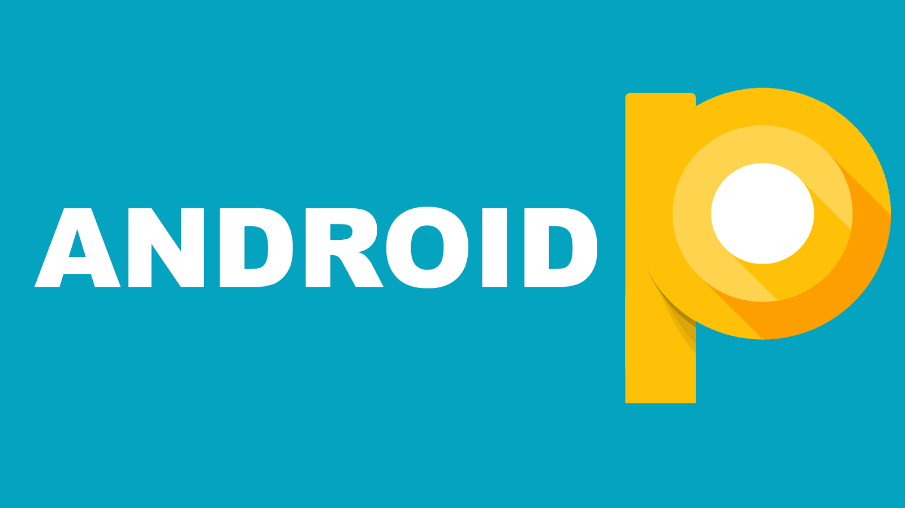

멋사에 들어오게 되면서 소개했던 서비스는 안드로이드 9.0버전 파이(Pie)입니다.
안드로이드 파이는 가장 최신에 나온 안드로이드 버전으로써 이전 오레오버전에서 이미지들과 제스쳐 부분을 보안을 하셨습니다.
어플리케이션의 이미지를 간략하게 바꾸며 조금 더 신경쓴 부분과 기존 기능들을 분활화하여 진행을 하였으며 기존 기능에서
조금 더 구체화 되었습니다. 이번 안드로이드에서 또 하나의 관심사는 빅스비이다. 빅스비의 기능을 추가한 부분과 기존 사용하는
부분에서 특정기능으로 이용중이던 다른 어플리케이션의 작동을 보다 쉽게 관리가 가능하게 되었다.
이름 : 최현식
나이 : 25세
대학교 : 남서울대학교
각오 : 대학교 와서 처음 해보는 코딩이며 아직 학교 과제나 간단한 프로젝트 만들어보는 정도만 해보는 수준에 그쳤습니다.
멋사를 통해 많이 배우고 있고 많은 정보를 얻었지만 좀 더 다양하게 체험을 해보고 싶고 많이 배우게 되서
안드로이드에 관심이 많지만 제가 서버쪽으로 당당히 취업을 하고싶다고 생각이 들게 되었습니다. 잘부탁드립니다!!